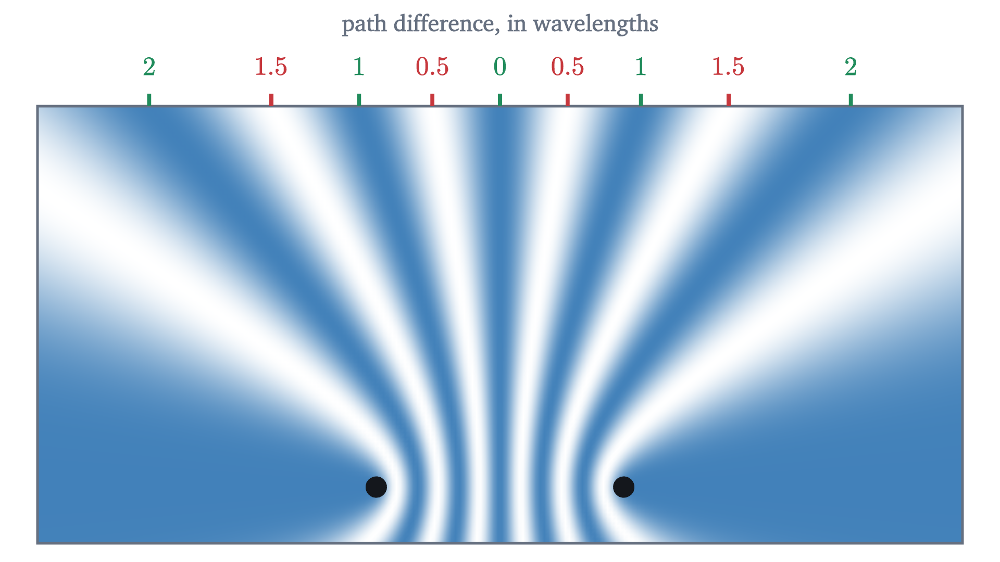

Waves and interference: how two ripples can cancel
What a wave is, why its speed is frequency times wavelength, and how adding waves gives the quiet lines of an interference pattern and the notes of a string.
AssumesSimple harmonic motion: springs and pendulumsSine waves: amplitude, frequency and phase
Tap the surface of a pond with a stick, steadily, and rings of ripples spread out. Now tap with a second stick a hand’s width away, in step with the first. Each stick alone would set every point of the surface bobbing. With both going, there are lines running outward from between the sticks along which the water hardly moves at all.
That is strange if you think of a ripple as stuff. Two heaps of sand make a bigger heap. But here a disturbance added to a disturbance gives, in places, no disturbance, and in other places twice as much. The same thing happens with sound from two loudspeakers and with light through two slits. To understand it we need to say what a wave is and how two of them combine.
The pattern moves and the medium stays
Start with one dimension: a long rope under tension, lying along the $x$ axis. Flick one end and a hump travels down the rope. Describe the rope at any moment by the sideways displacement $y$ of each point from its resting position.
Two things are moving in that animation, and they are different things. The hump travels along the rope at 4 m/s. Each bead of the rope moves only sideways, rising as the hump arrives and settling back where it started. Nothing material travels from one end to the other. What travels is a shape, and with it energy.
The shape gives us a formula. Suppose at $t = 0$ the rope’s displacement at position $x$ is $y = f(x)$, some hump-shaped function. After a time $t$, the same hump sits a distance $vt$ farther along, where $v$ is the wave speed. The displacement at $x$ now is what it was, at time zero, at the point $vt$ to the left:
Any function of the combination $x - vt$ describes a shape moving in the $+x$ direction at speed $v$ without changing form.
Pause and try
What describes the same hump moving in the $-x$ direction at speed $v$? Check your answer by asking where the crest is at $t = 1$ s, if the crest of $f$ is at $x = 0$ and $v = 4$ m/s.
Show answerHide answer
$y = f(x + vt)$. The crest is where the argument of $f$ is zero: $x + 4(1) = 0$, so $x = -4$ m. It has moved 4 m in the negative direction, as required. With $x - vt$ the crest would be at $x = +4$ m.
Sine waves: wavelength, frequency and speed
Now shake the end of the rope up and down steadily, in simple harmonic motion. Each shake sends a hump or a dip down the rope, and the rope takes the form of a traveling sine wave.
Four quantities describe it. The amplitude $A$ is the largest displacement. The wavelength $\lambda$ is the distance from one crest to the next, in meters. The period $T$ is the time for one bead to complete one cycle, and the frequency $f = 1/T$ is the number of cycles per second, in hertz. All beads share the period of the hand that drives them.
The two readouts in the animation stay equal, and that equality is the relation between the three quantities. During one period the hand makes one complete shake, which lays down one complete wavelength of new wave behind the old, so the old wave has been pushed along by exactly $\lambda$. The wave covers a distance $\lambda$ in a time $T$, which fixes its speed.
It is tidier to absorb the factors of $2\pi$. Define the wave number $k = 2\pi/\lambda$, in radians per meter, and the angular frequency $\omega = 2\pi/T = 2\pi f$, in radians per second. Then the traveling sine wave is
For the rope in the animation, $\lambda = 2$ m and $T = 0.5$ s, so $f = 2$ Hz and $v = 2 \times 2 = 4$ m/s. Units: $\text{Hz} \times \text{m} = \text{m/s}$.
Be careful about cause and effect here. The speed of a wave is set by the medium: for a rope, by its tension and its mass per meter; for sound in air at $20\,°$C, 343 m/s. The frequency is set by the source. The wavelength is then forced to be $\lambda = v/f$. Shaking the rope faster shortens the wavelength and leaves the speed as it was.
Adding waves
What happens when two waves are in the same place at the same time? Send a pulse from each end of the rope and watch them meet.
Pause and try
Two identical humps travel toward each other on a rope. Sketch what you expect at the instant their centers coincide. Then do the same for a hump meeting an equal dip. In the second case, what do you expect a moment later?
Show answerHide answer
The two humps make a single hump twice as tall. The hump and the dip cancel, and for an instant the rope is straight. A moment later both pulses have reappeared and continue as if nothing had happened.
This is an experimental fact about media, with a domain of validity: it holds when displacements are small enough that the medium responds in proportion, which covers ripples, ordinary sound and light. It fails for a breaking ocean wave or a shock wave. Where it holds, waves pass through one another unchanged, which is why you can pick out one voice in a room full of sound.
The hump meeting the dip should bother you. At the instant of cancellation the rope is straight, and the energy of both pulses seems to have vanished. It has not, and to find it we have to look at the beads’ velocities as well as their positions. Ahead of a hump’s crest the beads are rising, and behind it they are falling. For the two opposite pulses, these velocities add where the displacements cancel. At the instant the rope is straight, it is moving fastest: all the energy is kinetic.
Two sources: where the ripples cancel
Return to the pond, in the controlled form of a ripple tank. Two dippers, $S_1$ and $S_2$, are 6 cm apart and tap the water in step, each sending out circular ripples of wavelength $\lambda = 2$ cm. Pick a point $P$ on the surface, at distance $r_1$ from $S_1$ and $r_2$ from $S_2$.
The ripple from each dipper is a traveling sine wave in the distance from that dipper. At $P$ the two displacements are $A\sin(kr_1 - \omega t)$ and $A\sin(kr_2 - \omega t)$. We are making two modeling assumptions here: the dippers are exactly in step, and the two ripples have the same amplitude $A$ at $P$. (Real ripples weaken as they spread, so the second is only approximately true, best far from the dippers.)
Consider three positions for $P$ before doing any algebra.
The outcome depends only on the difference of the two distances, the path difference $r_1 - r_2$, and on its size compared with a wavelength. To get the rule for every point at once, add the two sine functions. The tool is the identity
which follows from the angle-sum formulas: write $a = p + q$ and $b = p - q$; then $\sin(p + q) + \sin(p - q) = 2\sin p\cos q$ because the $\cos p \sin q$ terms cancel.
The points with a given path difference form a curve (a hyperbola with the two sources as its foci), so the calm points line up along curves fanning out from between the dippers. Those are the white lines in the opening animation.

Standing waves on a string
One more arrangement of two waves explains how a stringed instrument gets its notes. A string of length $L$ is tied down at both ends, $x = 0$ and $x = L$. A wave sent along it reflects at the far end and comes back, so the string carries two waves of the same frequency and amplitude traveling in opposite directions, and by superposition its shape is their sum.
Take the wave moving left to be $A\sin(kx + \omega t)$. The end at $x = 0$ cannot move, so the reflected wave moving right must cancel it there at all times. The wave $A\sin(kx - \omega t)$ does this, since at $x = 0$ the sum is $A\sin(\omega t) + A\sin(-\omega t) = 0$. Add the two with the same identity, taking $a = kx + \omega t$ and $b = kx - \omega t$:
The $x$ and the $t$ have separated. This is no longer a function of $x - vt$, and nothing travels. Every point of the string oscillates in place with the same frequency, and with an amplitude $2A|\sin kx|$ that depends on where it is. Points where $\sin kx = 0$ never move; they are called nodes, and they sit half a wavelength apart. Halfway between them are the antinodes, where the motion is largest. The pattern is a standing wave.
So far only the end at $x = 0$ has been respected. The other end is tied down too, and that is a real restriction.
Pause and try
The string must also be at rest at $x = L$ at all times. What does that require of $\sin(kL)$, and so of the wavelength? List the three longest wavelengths that fit on a string of length $L$.
Show answerHide answer
We need $2A\sin(kL)\cos(\omega t) = 0$ for all $t$, so $\sin(kL) = 0$, which means $kL = n\pi$ for a positive whole number $n$. With $k = 2\pi/\lambda$ this is $\lambda = 2L/n$. The three longest are $2L$, $L$ and $2L/3$: the string holds one, two or three half-wavelengths.
A string cannot vibrate in this way at just any frequency. The allowed ones are whole-number multiples of the lowest, $f_1 = v/2L$, called the fundamental; the pattern with frequency $f_n = nf_1$ is the $n$th harmonic. The condition is easy to remember from the picture: a whole number of half-wavelengths must fit between the ends.
Worked examples
Limits and common mistakes
The interference theorem assumed sources that stay exactly in step. Two separate musicians, or two light bulbs, drift in and out of step far too quickly for a steady pattern to form; such sources are called incoherent, and their loudness or brightness simply adds. Steady interference needs sources driven by the same oscillator, or one wave split in two.
Interference does not destroy energy. Along a line of cancellation there is none, and along the lines of reinforcement the amplitude is doubled, which is four times the energy of one wave. Averaged over the pattern the energy is what the two sources supply, moved from the calm places to the lively ones.
Check yourself
Two loudspeakers in step emit sound of wavelength 0.80 m. At a point 3.0 m from one speaker and 4.2 m from the other, what does a listener hear?
The next lesson leaves oscillations for motion in a circle, and uses it to explain why the Moon stays up.
Problems
Take the speed of sound in air as 343 m/s.
Problem 1
Ocean waves pass a buoy. The crests are 3.0 m apart, and the buoy rises to a crest once every 2.0 s. Find the frequency and the speed of the waves. Does the buoy travel with them?
Show solutionHide solution
$\lambda = 3.0$ m and $T = 2.0$ s, so $f = 1/T = 0.50$ Hz and $v = f\lambda = 0.50 \times 3.0 = 1.5$ m/s. The buoy does not travel: it is part of the medium’s surface, and bobs about a fixed position as the pattern passes.
Problem 2
A wave is described by $y = 0.02\sin(5x + 40t)$ in SI units. Find its direction of travel, wavelength, frequency and speed.
Show solutionHide solution
The combination is $kx + \omega t$, so it moves in the $-x$ direction. $k = 5$ rad/m gives $\lambda = 2\pi/5 = 1.26$ m. $\omega = 40$ rad/s gives $f = 40/2\pi = 6.37$ Hz. $v = \omega/k = 40/5 = 8$ m/s; check: $6.37 \times 1.26 = 8.0$ m/s.
Problem 3
Human hearing covers roughly 20 Hz to 20 000 Hz. Find the wavelengths in air at the two ends of that range. Then find the wavelength of an FM radio wave of frequency 100 MHz, which travels at $3.00 \times 10^8$ m/s.
Show solutionHide solution
$\lambda = v/f$. At 20 Hz: $343/20 = 17$ m. At 20 000 Hz: $343/20\,000 = 0.017$ m, or 1.7 cm. Radio: $3.00 \times 10^8 / 1.00 \times 10^8 = 3.0$ m. The frequencies differ by a factor of a thousand across hearing, so the wavelengths do too, from the size of a house to the width of a finger.
Problem 4
In the lesson’s ripple tank (dippers 6 cm apart, in step, $\lambda = 2$ cm): (a) Is the point 9 cm from one dipper and 12 cm from the other on a line of reinforcement or cancellation? (b) The path difference at any point is at most the distance between the dippers. Use this to count the lines of cancellation in the whole pattern.
Show solutionHide solution
(a) The path difference is $3$ cm $= 1.5\lambda$, a whole number plus a half: cancellation. (b) By the triangle inequality $|r_1 - r_2| \le 6$ cm, with equality only on the line through the dippers, outside them. Cancellation needs $|r_1 - r_2| = 1, 3, 5, \dots$ cm. The values not exceeding 6 are 1, 3 and 5 cm, each occurring on both sides of the center line: 6 lines of cancellation. (Reinforcement: differences 0, $\pm2$ and $\pm4$ cm give 5 curves, plus the two rays along the line of the dippers where the difference is exactly $\pm6$ cm.) The figures show the six white lines.
Problem 5
Two loudspeakers 3.0 m apart are driven in step by the same signal. A listener stands directly in front of one speaker, 4.0 m from it. Which frequencies between 100 Hz and 1000 Hz are canceled at the listener’s position, and which are reinforced?
Show solutionHide solution
The other speaker is $\sqrt{3.0^2 + 4.0^2} = 5.0$ m away, so the path difference is 1.0 m. Canceled: $1.0 = (n + \tfrac12)\lambda$, so $\lambda = 1/(n + \tfrac12)$ m and $f = 343(n + \tfrac12)$ Hz: 171.5, 514.5 and 857.5 Hz in the range. Reinforced: $1.0 = n\lambda$, so $f = 343n$: 343 and 686 Hz. A single listening position favors some frequencies and suppresses others, which is one reason speaker placement matters.
Problem 6
At the instant two equal and opposite pulses on a rope overlap completely, the rope is straight. A student concludes that the energy of the pulses has been destroyed, and that the pulses cannot reappear. Explain what is wrong, and say what a photograph of the rope at that instant would fail to show.
Show solutionHide solution
The energy of a wave on a rope has two parts: potential energy from the rope’s displacement and stretch, and kinetic energy from the sideways motion of its parts. Superposition applies to velocities as well as displacements. For a hump and a dip approaching each other, the displacements at the overlap are opposite and cancel, and the sideways velocities there have the same sign and add. When the rope is straight its potential energy is zero and its parts are moving fastest, so all the energy is kinetic. That motion carries the rope past the straight position, and the two pulses re-form. A photograph records positions and not velocities, so it would show a rope that looks at rest when it is not.
Problem 7
A string 0.80 m long is fixed at both ends, and waves travel on it at 240 m/s. (a) Find the frequencies of its first three harmonics. (b) Touching the string lightly at a point forces a node there without stopping the rest of the string. Where could you touch it to silence the fundamental and the second harmonic while leaving the third?
Show solutionHide solution
(a) $f_n = nv/2L = n \times 240/1.60 = 150n$ Hz: 150, 300 and 450 Hz. (b) The third harmonic has $\lambda_3 = 2L/3 = 0.533$ m and nodes every $\lambda_3/2 = 0.267$ m: at 0, 0.267, 0.533 and 0.80 m. Touch the string at 0.267 m or 0.533 m from an end, one third of the way along. The fundamental has no node between the ends, and the second harmonic’s only interior node is at 0.40 m, so both need the string to move at the touched point and are damped.
Problem 8
A string of length $L$ is fixed at $x = 0$, and its other end at $x = L$ is attached to a light ring that slides freely on a rod, so that end is an antinode of any standing wave. (a) Starting from $y = 2A\sin(kx)\cos(\omega t)$, find the allowed wavelengths and frequencies. (b) Compare the lowest frequency with that of the same string fixed at both ends, and say which multiples of the lowest are present.
Show solutionHide solution
(a) The form already has a node at $x = 0$. An antinode at $x = L$ means $|\sin(kL)| = 1$, so $kL = \tfrac{\pi}{2}, \tfrac{3\pi}{2}, \tfrac{5\pi}{2}, \dots = (2n - 1)\tfrac{\pi}{2}$ for $n = 1, 2, 3, \dots$ Then $\lambda_n = 2\pi/k = \dfrac{4L}{2n - 1}$ and $f_n = \dfrac{v}{\lambda_n} = (2n - 1)\dfrac{v}{4L}$. The string holds an odd number of quarter-wavelengths. (b) The lowest is $v/4L$, half of the $v/2L$ for two fixed ends, an octave lower. The others are 3, 5, 7, ... times the lowest: only odd multiples occur. The same mathematics describes the air in a pipe closed at one end, such as a clarinet.
Problem 9
For two in-step sources of equal amplitude $A$, find the smallest positive path difference at which the combined amplitude equals $A$, the amplitude of one source alone. What is the combined amplitude at a path difference of $\lambda/4$?
Show solutionHide solution
The amplitude is $2A|\cos(\pi\Delta/\lambda)|$, with $\Delta$ the path difference. Setting it equal to $A$ gives $|\cos(\pi\Delta/\lambda)| = \tfrac12$, whose smallest positive solution is $\pi\Delta/\lambda = \pi/3$, so $\Delta = \lambda/3$. At $\Delta = \lambda/4$ the amplitude is $2A\cos(\pi/4) = \sqrt2\,A = 1.41A$. So the amplitude falls smoothly from $2A$ at $\Delta = 0$ through $1.41A$ and $A$ to zero at $\Delta = \lambda/2$.